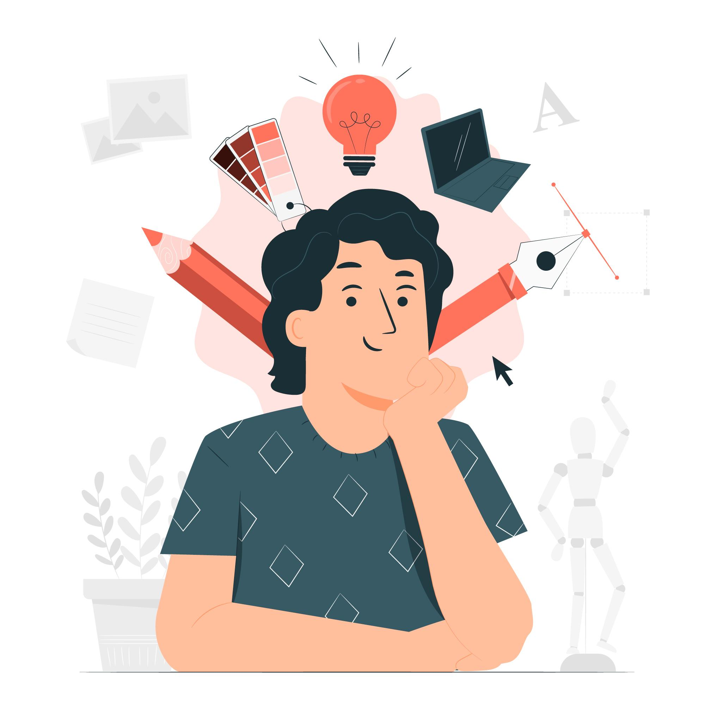

Background, skills & interests
Hello! My name is Hare Rama Chakraborthy, and I'm thrilled to welcome you to my website. I'm an 18-year-old second-year student at Chennai Institute of Technology (CIT), pursuing a Bachelor's degree in Artificial Intelligence and Data Science. I chose this field because I believe that AI and data science will shape the future and have a profound impact on society, and I'm excited to be a part of that.
Since a young age, I've been fascinated by computers. While my career aspirations have evolved over time, my love for exploring new computer science topics has never wavered. In particular, I developed an interest in web development which is why you're here reading this text right now. I realized that I have a passion for creating websites and applications that make life easier and more enjoyable for users.
Through this website, I'm excited to share my skills and projects with you. Thank you for visiting!
I'm always eager to learn about new things and explore different areas of interest. Here are some of the subjects that currently have my attention:
Feel free to get in touch! You can find me on:
Looking forward to hearing from you!